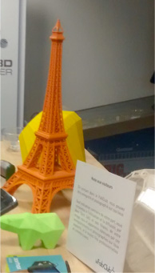
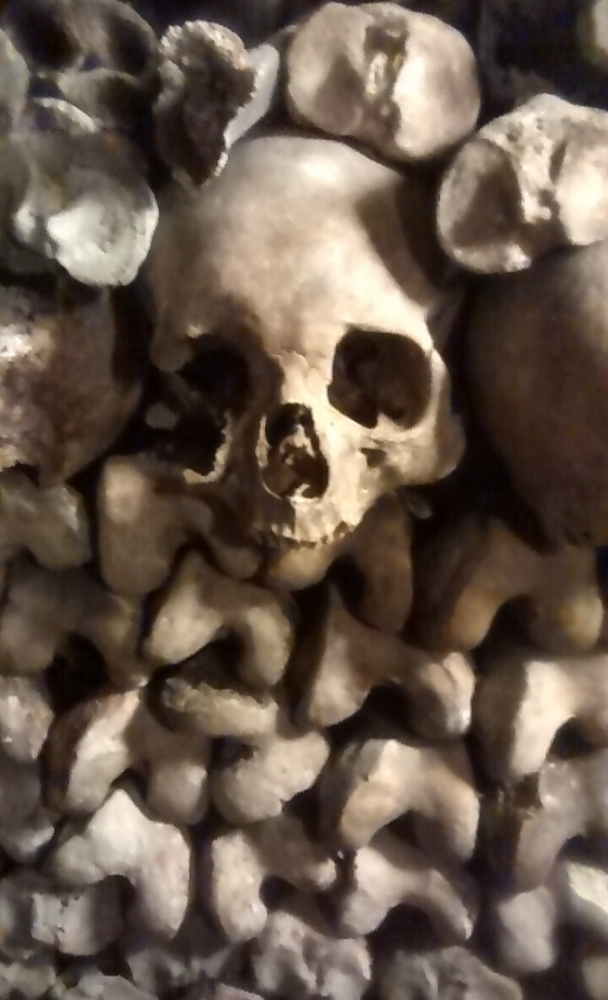

As part of our CDC course we took a trip to Paris for 4 days. We did a lot of things here in relation to design from rapid manufacturing to shop layouts to the display of skulls in the Catacombs. The trip allowed us to view different culture, in regards to design and lifestyle.
As we had learned in other lectures the way design and see the world all depends on our experiences in life, so this trip gave us a glimpse at what the French people see and their life experiences.
The first experience we saw and looked at was in the LeFabClub where they have a wide array of 3D printers and CNC machines. They work with both companies and designers to design and print products.
This Eiffel Tower scale model shows the true capabilities of the 3D printer and how it can be used in both practical and impractical uses. The tower was made in solid works and then exported as a .STL file where it can be printed in PLA or ABS.
I think that using 3D printers should be a vital part of product designers arsenal. They allow for quick prototyping and manufacture so that designers can iterate and improve on their designs.
The Catacombs were another interesting experience while in Paris. The Catacombs in Paris are a burial site for over 6 million people and has been called “The World’s largest Grave”. When visiting the Catacombs you are astounded by the sheer number of bones in the grave.
The bones inside have been carefully arranged. These skulls have even been arranged into several shapes and one even being arranged into the shape of a heart! The bones gave us a very morbid view of a problem which took over Paris and they found a solution, even though it seems dark.
Another experience we saw was the Pompidou Centre in here we saw a wide range of exhibits from an architecture based exhibit where all the parts were CNCed to a train made out of garbage bins moving slowly around in a circle.
The variety of these exhibits allowed us to discover what thinking outside the box and inspired us to be more creative in the way we thought.
Inside the Pompidou centre there was a exhibit focusing on the senses. Here we were forced to use our senses in different ways like sitting still and listening to music and another in a completely dark room with lights flashing at intervals throughout the day. This made me think about how I could incorporate a more overall sensory feeling in my designs.
I think this trip to Paris was worthwhile and allowed me to be inspired by a different culture while still focusing on being in a different city and doing touristy things.